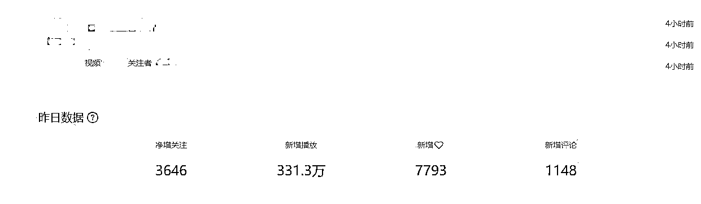
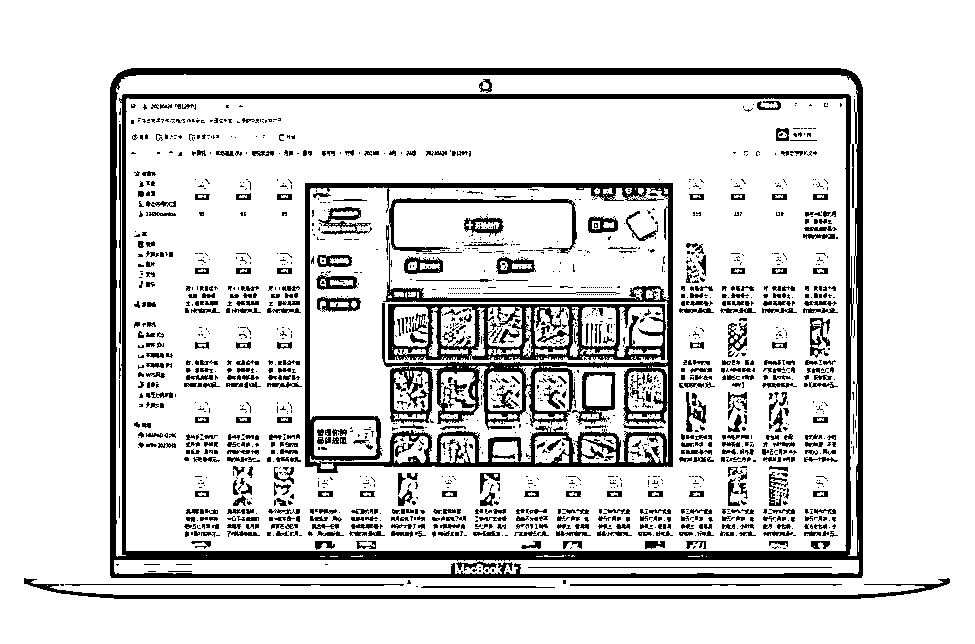

来源：https://p9pw261qxw.feishu.cn/docx/WASldT54bo3StIxgFhYcDeLWnnJ
总共开有9家店铺，覆盖在「抖音、快手、视频号、小红书」，总GMV在200多万。
7月份前期共做了近30个账号，至8月节点将近，不断做加法、减法，9月最后筛选出了12个账号。利润来自于8、9月，7月主要为测试为主。

21-22年，内容方面，我一直在知乎平台做内容输出，做知乎好物，但知乎的情况，大家也清楚，知乎已经没有红利了，每况愈下。
22-23年，我开始自己尝试在短视频平台进行内容带货，做过中医、切片等混剪式的内容输出。前前后后做了十几个账号，都没能做出点像样的成绩。
屡战屡败，真的很受伤，无法破局，我的状态也越来越差。我在想：是不是我做不来短视频类的内容？只能写写字？做做图？
机缘巧合之下，之前一起做过传统货架电商的好朋友跟我说，回老家一起做点事。
那么回去后，根据身边的资源，开始物色产品，机缘巧合下，选了月饼这个产品，开始组建团队。
刚开始接触月饼项目时，我是一个萌新，对月饼产品一无所知，只吃过月饼，却压根不知道月饼是怎么生产的，也不知道市场的需求是怎么样的。
好在，有问题就有答案。
马克思说过一句话：「物质决定意识。」
简单理解就是：你没见过的东西，你不可能凭空想象出来。那么项目不是凭空自己想出来的。是看别人的案例，跟着实操！再慢慢优化。
我之前做项目，都是很麻木地跟着别人的方法论走，或者盲目地「干就完了」。
经过被现实毒打，我深刻意识到做项目应该从分析整个外部环境开始，确定我们的竞争对手是谁，竞争对手的价值是什么？分析拆解它！然后再结合自己的情况，去做定位。
项目开始的第一个星期，我带领团队，什么都没有做，只做一件事：建立了飞书案例库，拆解市场上所有做月饼的账号视频。
经过团队勤勤恳恳的拆解了诸多案例，「运营就是一个做减法的过程」，结合自身做筛选，做减法后，我们也终于「锚定目标」。
为了验证项目的可行性，我抽取了对标的框架，结合我们的情况，建立了我们的「方法论」，以及「案例库」。
在拆解案例的路上，我发现小伙伴们很迷茫，也很焦虑，碰上问题不知道如何去面对，如何去解决？他们直接卡住了，因为他们不知道哪些是案例？哪些又是有价值的案例？
如果团队连最基本的「网感」都没有，那么又如何带领他们在互联网上做出那么一点点成绩呢？
自己废寝忘食去做主题阅读，去付费学习，去生财有术等知识星球去搜索相关答案。理解到本质是因为小伙伴们对此项目的运作规则不够了解，为了让伙伴们更好地拆解案例，更好共同地成长。
通过多次和小伙伴他们开会沟通，通过自己的学习输入，我摘取、提取模型，编写了「案例思维篇1.0」。这些思维模型，我们小伙伴再小白，也是可以拿来就用，用了就有效的。
非常有助于提升认知和拓展思维方式：
我和小伙伴们，就按照以上思维去进行拆解，拆解完后填写在案例库。
打战时情报员的作用非常重要，他们负责搜集、分析和传递情报信息，协助指挥官制定作战计划、调整战略和决策。
那么我们是用什么做拆解案例的载体呢？当然得选择协作软件，我们选择的是飞书，当然金山文档，腾讯文档也是可以的哈。
我制定了我们的「案例库」，对收集的信息保存在飞书，由我进行筛选、分析和评估，以确保其准确性和可靠性。
我建立的飞书案例库作为我们团队的情报信息，而且「案例库」，我要求保持更新状态，因为市场在变化，对手也在调整。
当时跟着徐宿报名了兰陵王的知识体系课程，让我明白：
这个世界是被「因果」所支配的。
刚开始时，我和小伙伴们，都只会看着哪些漂亮的数据，都只会盯着「对标账号」的流量数据、出单情况，这是「果」。
那么「因」？我们并没有思考过，导致我们抄作业都抄不好。
后来我用因果思维去寻找答案，并要求他们：不要只看果，要会溯因，要找齐因果。
现在承受的所有的结果「果」，皆来自做了什么的原因「因」。
下面，我拿一个我们前期拆解的过程，给大家演示一下。
锚定目标后，我们把「对标账号」的视频，以及直播做了元素拆解。
人货场，人货场，人货场是电商人迈不过去的坎。
第一次拆解，我们以「人货场」的模型，以「人」的动作作为定义，视频内容分割为出400+片段，经过定义、分类、归纳。
得出结论：
视频内容的组成主要为：「月饼制作」+「月饼展示」。
人：制作月饼人员、掰饼工具人、老人、小孩
货：老式油纸月饼
场：工厂生产线、老物件场景
直播间是动态的，不像视频那么直观，我开了一个小号，天天蹲在直播间，从对标账号上播到下播，然后通过飞书妙记去记录，也得出了结论。
人：主播
货：老式油纸月饼
场：工厂生产线
直播第一层为「录播」，录播内容为工厂生产线上「油纸包月饼」的过程。
直播第二层为「手播」，摄像头对着「绿幕」，主播出手，讲话术。
蹲守直播间，顺便把对标话术也搞下来了，为后期我们的直播做奠基。
好家伙，通过这么一拆解，我们的目标更为明确清晰了。
既然以上已经明确「规律」，我们是不是就可以开始了？不着急！
当时我看到了兰陵王课程里面的「三归模型」，令我大受启发，我把它重定义，运用到自己的项目上。
归纳、归因、归道。
归纳:定义内容、拆解元素、分类存量
归因:找齐因果、控制变量、确定因果
归道:经验思考、学习巨人、掌控法则
我在想，我们也只是拆解了表象，但是本质，我们还是没有理解，如果直接复制，可能只具其形不具其神。
我吸取了前人的经验+自我的思考，最终经过大量的拆解，归纳「对标账号」的视频。
首先，我找到的是一个「规律」：账号视频的内容基本为「经典歌曲+月饼制作+月饼展示」的组合。
然后，我通过这个规律来判定一个「因果」：是「经典粤语歌曲+月饼制作+老物件背景中展示+掰月饼」导致了视频数据很好。
最后，我推断这个因果来追溯一个「法则」：人性的念旧情怀+源头工厂保障
一个是情绪价值，一个是产品背书。
「对标账号」针对背后的人群进行了经营：
视频内容为：「月饼制作」证明源头厂家+「老物件背景」勾起童年回忆+「月饼展示」验证真材实料
直播内容为：「月饼制作」证明源头厂家+「油纸月饼」勾起童年回忆+「月饼展示」验证真材实料
人员操作为：「账号的日更」+「账号的日播」
「纸上得来终觉浅，绝知此事要躬行」
我们是理解了别人怎么拍摄，怎么剪辑，爆款元素是什么。
但这些条件我们具备吗？纸上谈兵真的有效吗？我们能做到吗？于是我决定去开车40多公里去工厂了解月饼制作流程。
通过去了工厂，在工厂流水线待了几天，看着阿姨们制作月饼，和她们沟通学习，我才发现一个月饼的诞生，竟然是这样生产出来的。
月饼刚烤出时是松软的，但冷却后就会变硬，而口感好的时候，是月饼生产出来3-5天，更好吃，她们称为「回油期」。
了解了月饼的整个制作流程，步骤还是蛮多的，一个月饼需要人工制作馅料、皮料，包馅，再通过模具印模成型，通过1个多小时的烘培，2个小时的冷却，再到包装和装盒。
站在用户的角度，我思考一个问题：到底哪些镜头是用户乐意看到的？
我个人也是作为一个消费者，也好奇月饼是怎么生产的，也担心食品安全问题。站在这两个点上，我给我们拍摄的内容做了重定义、分类、归纳：
把整个月饼的制作流程通过拍摄，后期剪辑，呈现给用户。
工厂的场景还好说，你说老房子、老物件咋整嘛？但是 米缸里、电视柜的月饼 是我们精准用户60-80后的回忆啊。
所以这个能提供情绪价值的场不能放弃，我特意跑回老家寻找，但是很遗憾，没有。后面也求助了很多人，最后在一个小伙伴的老家，这么一栋很有年代感的房子还保存着当年的样貌。
说干就干，立马带上相机，iPhone、补光灯等设备来回100多公里去拍摄。给大家贴一张图，是不是很有年代感？哈哈
物尽其用，好不容易来一趟，必须得好好拍，「对标账号」的月饼展示的「场」有工厂、老物件（厨柜、米缸）。
我自己也加入一些场景。
加上后面补拍的「撕」、「掰」的视频片段，共1000+视频片段，我全部定义打标、分类归纳到独立文件夹。
后面的爆款视频有了变化，变成了流水线的搞笑视频，其实就是在流水线「月饼制作」-「印模成型」这个过程中加入了滑稽的动作，整体配上轻松的BGM《小神仙》。
也就是抖音今年首个月饼类目破亿浏览量的视频，但本质并没有改变，我们可以很快就跟上，贴个图：
以上的拆解，几乎就是在做月饼项目的账号视频，自然流爆款的元素组成，甚至是食品，或者也可以扩展到其他类目，感兴趣的可以去拆解验证一下。
拆解拍摄完成后，那么我们该如何去生产自己的视频内容呢？这就考验剪辑能力了。
刚开始一群小伙伴一起剪辑，但效果很微弱，我们四个人，四台电脑，一天都剪辑不出20条视频，这怎么搞？还想玩矩阵？
我又陷入了困境，因为没有剪辑，没有内容量，就没有后续了。但好在我有个优点：碰上问题不退缩，感觉迷茫，感觉焦虑，就会去学习。
后来在生财有术，我找到了答案。看到了@奇杰的分享，里面有一个模型：「批量思维」，让我看到了新的希望，这篇文章相信大家都看过，链接我贴下面：
生财有术·精华帖索引工具2.0
我感觉我悟了，又行了。
我深刻理解到做内容其实是简单的，平台内容元素呈现出多样性，并不在于平台复杂，而在于平台元素数量的庞大、参与者繁多，但是，这一切都是数个基本核心的组合，而这些组合遵循着极为简单的法则。
放在短视频内容，更是简单，我们观察「对标账号」短视频内容的基本核心，就是上面说的两个「月饼制作」+「月饼展示」，跟着1:1即可。
我特意针对对标账号的爆款进行了拆解：
「对标账号」的流量大部分是由几条视频贡献的，那么我们可以来拆一下它的组成。
还是老规矩，主要看「画面」的组成，因为其他的组成，我们一成不变，照搬。
把要1:1的对标视频拉进「剪映」，这里推荐使用电脑版。
做拆解，我们可以看出视频就由「月饼制作」+「月饼展示」组成。
我们要做的就是更换它的对应的画面即可。
我简单拿几个视频来做一下思路讲解吧。
细心的你不难发现，这里面其实是多个镜头元素组成的4个视频，一个草稿里面4个视频，成品分别对应4个账号。以此类推
对标「模板」拉进来后，「分离音频」后，复制粘贴3份，共4份，逐一更换对标「画面」片段。
导出时，用剪映的「选定区域」，剪映默认快捷键为「Shift+X」，选择好其中一个视频导出到相应文件夹即可。
给每一个「1拖x」的视频草稿命名，独立保存。

为什么呢？
因为如果这个模板做的视频爆了，或者效果相对比其他模板做出来的更好。
那么我们就找回这个草稿，复制粘贴，更换「画面」快速生产内容、上传发布即可！
「爆款会再爆」。
有了「批量思维」的加持，我如虎添翼，独揽内容剪辑一职，这样小伙伴们就可以抽身去做其他为项目增效的事情了。
月饼项目到了8月2日，我已经剪辑了5417条视频。基本每天都会花费8小时以上去做剪辑，其他时间去调配整个项目的运转。
月饼项目到了8月23日，我的草稿箱已经接近T级容量了。
因为熟能生巧，我开始习惯几十条视频放一个草稿开始批量剪辑生产，赶工期100-200的量往上加。
协作发布，特别是做矩阵的友友们，相信大家都会碰上类似的问题：内容的管理。
我采用了数据线传输，QQ，微信，百度云盘，夸克云盘等，发现都很难做到「丝滑」。于是我继续去查询能上传下载内容不失真，又能共同协作的东西。功夫不负有心人，在不断下载登录测试中，我找到了天翼云盘。
天翼云盘有个好处，它一个账号不限制设备不限制系统登录。
也就是你只需要上传内容在天翼云，你的小伙伴的 N 台手机共同登录一个账号，就可以做到同步协作办公。
就不需要用数据线，QQ、微信传输，也不像其他云盘，需要多个账号登录协作。
天翼云盘，我们的拍摄在现场拍摄完上传到「素材库」，这边就可以马上下载打标归类，进行剪辑生产，然后再上传到「成品库」。
刚开始，我是把成品内容放在一个名字为「成品库」的总文件夹里面的，他们总是出错，有时候还把别人文件夹给下载上传了，导致几个账号同质化严重被判违规，废了。
为了更好「协作发布」，我在天翼云盘建立了相应独立文档，并把每一个小伙伴要负责发布的视频，以他们的名字或者账号独立命名，方便他们共同协作发布管理。
天翼云盘真的帮了我们的大忙。
有需要的自行下载吧：天翼云盘 珍藏美好生活 网盘|文件备份|资源分享
链接无任何利益相关，可以放心食用。
我一开始的想法做法就是照抄！参考为了拆解建立的飞书案例库！让发布视频的小伙伴直接复制粘贴进行发布。
遵循「二八定律」，基本上爆款就几个，同类同品，都可以直接拿来直接用。
也是照抄，适当的可以加入自己在做的品牌。
每个平台可以加的话题不一样，比如抖音话题为5个，快手为3个，视频号和小红书不限制。
非常建议做自媒体的家人们，有内容可以做一鱼多吃。下面我简单说一下我们的操作。
选择好一帧做封面，打好标题、话题后，顺手复制输入框的全部内容。
发布时，「高级设置」，关闭默认的「保存本地」、「允许下载」，打开「高清发布」。
发布后，请记得自己把视频完整看一遍，然后「点赞」「收藏」、「评论」，先拿下一个数据。
标题和话题，就是从抖音快手上复制过来的，直接「粘贴」即可。
如图所示：「藏在米里面的纸筒月饼是我们的童年回忆」「月饼工厂流水线生产过程」
视频号的「短标题」位置，有关键词检索作用，记得补充一下「系统限制20字内」。
同理！完整看一遍，点「推荐」，评论一下，评论可以复制你在抖音评论的。
当然，小红书不是，小红书需要特制的标题文案，以及封面。这里就不具体展开了。
发布的流程上，我也用飞书把它做成了SOP，做成发布操作图文、视频手册，让小伙伴按照SOP走就可以。
月饼项目到了8月，各大同行、各大品牌也开始入场。危机感也扑面而来，因为有人开始和我们抢流量了。
有段时间，我发现一个异常值：有流量，但转化率下降得很厉害。
这时候，我想着如何在保证利润的前提下，继续保持甚至放大呢？还有什么是我们可以做，又没有做的呢？
没错，以上这套体系，包揽了店铺，我们往里面填充产品；包揽了账号，我们往里面填充内容；有流量，搭建好人货场，由主播去承接转化。
那么还可以加入达人，给出高佣，由达人去帮我们带货。
运营性的部分，以合作为主。从0到1要努力，要躬身亲为。1-10-N要学会授权，敢于放权利是主要任务。
「助人获得势能。」
不知道各位玩传统货架电商时，有没有玩过他们的「联盟」？
有没有找过淘宝客，京挑客？
兴趣电商也一样，他们共同的属性为「达人」。
我特意分配一个人出来，做我们的店铺商务，专门去找达人合作，部分成绩截图如下：
做项目，特别是这种季节性的项目，爆发期只有短短的一两个月，前期的矩阵，是为了用数量对抗不确定性。
类似7月份前期我们共做了近30个账号，至8月节点将近，不断做加法、减法，9月最后筛选出了12个账号。
等测试出有效果，跑通的账号后，我们就要开始集中兵力，专攻某个平台，或者某个账号，不管是内容的叠加堆积到系统上限，还是直播时长拉满到日不落。
心得就是：谨慎做加法，果断做减法。
我给大家说个个人教训，供参考：
「投流只是放大器，不是救命稻草。」
我做信息流，做电商，做内容营销，做互联网，流量=钱，一直钻入一个误区：投流就能放大。
因为只要你给钱，平台就给量，不断踩坑后，才发现：
这个项目最大的安慰就是，靠内容来撬动自然流量，总算没有负我开年立的flag。
我的互联网职业生涯是这样经历的：
从一贫如洗到负债累累，普通人，在社会上和别人竞争中，核心竞争力的点，在于有自己的「知识体系」，可以简单理解：认知思维
内容的产出，其实在于你的知识体系，也就在于你的认知思维，总说学经验，买教训，补认知。
大部分人得到的只有零零散散的碎片化的信息，根本无法衍生持续往下走的动力，因为这根本无法得到持续正反馈。
扯远了，没有拿到结果的自媒体运营，都会碰上流量问题，也一直觉得就是流量问题，有流量什么都可以卖，空气都能卖，但本质是能力问题，没有能力获取流量，而归根是认知问题，先知后行为正道。
多思考，通过思考做决策，选对方向，让努力更有价值。
节点产品，适合放大投流放大的是在前15天，当然，具体要根据你的目标和预算去做规划。
一个人只要掌握80到90个思维模型，就能够解决90%的问题。而这些模型里面非常重要的只有几个。
——查理•芒格
上面做店铺、做账号的「矩阵思维」，做拆解的「因果思维」、「用户思维」、「三归模型」，做剪辑时的「批量思维」，协作发布的「系统思维」等等让我在此项目中，在碰上问题时，可以快速做出调整决策。
做项目有几个点，和大家聊一聊：
1.禁止内耗
2.降低预期
3.做好筛选
4.做好阶段性计划
5.减宽度加深度
1.内耗是无能为力的表现，自己和团队的所有精力和决策都应该以拿结果为导向。
2.降低预期，处处都是惊喜，从小做起，以拿小结果为目的，逐步推进。
3.数据上计算好投产比，有舍才有得。管理上，做筛选不做教育。
4.现在的时代，一切都在不断快速改变，不同阶段有不同的考验，每个阶段应该做什么，并且要取得什么结果，这结果不一定是钱。
5.前期的数量抵抗不确定性，宽度谁都会，不就是钱嘛，不就是矩阵嘛，不就是批量复制嘛，到后期就要减宽度加深度，因为最终活下来的肯定是把项目加深的，这里包括对供应链（产品）的把控，平台技术的理解，流量（客户）的动向等，这些很重要。
我当时在团队开始时，我问了团队伙伴们：为什么赚不到钱？大家有思考过吗？
「人有我有，人无我有，人有我优，人优我廉，人廉我转。」
我们生活在一个供给过量而消费不足的时代。
市场由供需关系而定：
这些都变得竞争激烈，看平台制定的「赛马机制」就可得知。
目前互联网业态倾向于:大自然生存法则「弱肉强食」。
做兴趣电商其实也是简单的，为什么赚不到钱的「因」。
总结后只有一点：人有我没=赚不到钱
别人日更3-10条，我们没=赚不到钱
别人日播2-8小时，我们没=赚不到钱
别人入联盟开高佣，我们没=赚不到钱
别人找达人带货，我们没=赚不到钱
别人付费推流，我们没=赚不到钱
那么怎么才能赚到钱「果」？大家反推即可。至于人无我有，人有我优，人优我廉，人廉我转，又是另外的话题了。
以上，最后：「任何方法论都有适用边界」，还请因地制宜。
生财的的确确是一块宝地，今天取得的成绩，离不开生财。无言感激，奉上自己的经历，希望能让大家一起生财有术。
最后的最后，有货源、资源，或者在做电商的，或者在做内容创作的友友们可以联系我，一起交流，一起成长。